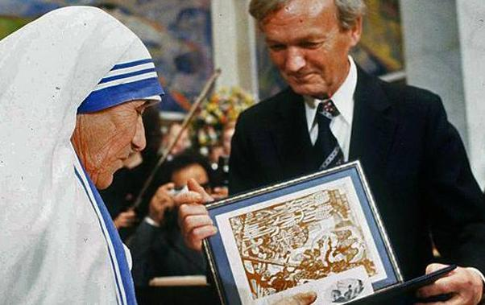
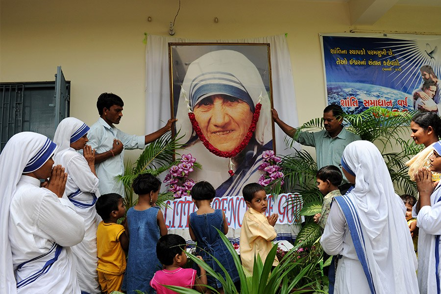

Mother Teresa was the founder of the Order of the Missionaries of Charity,
a Roman Catholic congregation of women dedicated to helping the poor.
Considered one of the 20th Century's greatest humanitarians, she was
canonized as Saint Teresa of Calcutta in 2016.
BIOGRAPHY
Who Was Mother Teresa?
Nun and missionary Mother Teresa, known in the Catholic church as Saint Teresa of Calcutta, devoted her life to caring for the sick and poor. Born in Macedonia to parents of Albanian-descent and having taught in India for 17 years, Mother Teresa experienced her "call within a call" in 1946. Her order established a hospice; centers for the blind, aged and disabled; and a leper colony. In 1979 she received the Nobel Peace Prize for her humanitarian work. She died in September 1997 and was beatified in October 2003. In December 2015, Pope Francis recognized a second miracle attributed to Mother Teresa, clearing the way for her to be canonized on September 4, 2016.
When and Where Was Mother Teresa Born?
Mother Teresa was born on August 26, 1910, in Skopje, the current capital of the Republic of Macedonia. The following day, she was baptized as Agnes Gonxha Bojaxhiu.
When and Where did Mother Teresa Die?
After several years of deteriorating health, including heart, lung and kidney problems, Mother Teresa died on September 5, 1997, at the age of 87
AWARDS & RECOGNITION

Mother teresa receiving Noble Prize 1979
In February 1965, Pope Paul VI bestowed the Decree of Praise upon the Missionaries of Charity, which prompted Mother Teresa to begin expanding internationally. By the time of her death in 1997, the Missionaries of Charity numbered more than 4,000 in addition to thousands more lay volunteers with 610 foundations in 123 countries around the world.
The Decree of Praise was just the beginning, as Mother Teresa received various honors for her tireless and effective charity. She was awarded the Jewel of India, the highest honor bestowed on Indian civilians, as well as the now-defunct Soviet Union's Gold Medal of the Soviet Peace Committee. In 1979, Mother Teresa was awarded the Nobel Peace Prize in recognition of her work "in bringing help to suffering humanity."
LEGACY

Mother teresa Orphanage on 12th anniversary of her death
Since her death, Mother Teresa has remained in the public spotlight. For her unwavering commitment to aiding those most in need, Mother Teresa stands out as one of the greatest humanitarians of the 20th century. She combined profound empathy and a fervent commitment to her cause with incredible organizational and managerial skills that allowed her to develop a vast and effective international organization of missionaries to help impoverished citizens all across the globe.
Despite the enormous scale of her charitable activities and the millions of lives she touched, to her dying day she held only the most humble conception of her own achievements. Summing up her life in characteristically self-effacing fashion, Mother Teresa said, "By blood, I am Albanian. By citizenship, an Indian. By faith, I am a Catholic nun. As to my calling, I belong to the world. As to my heart, I belong entirely to the Heart of Jesus."